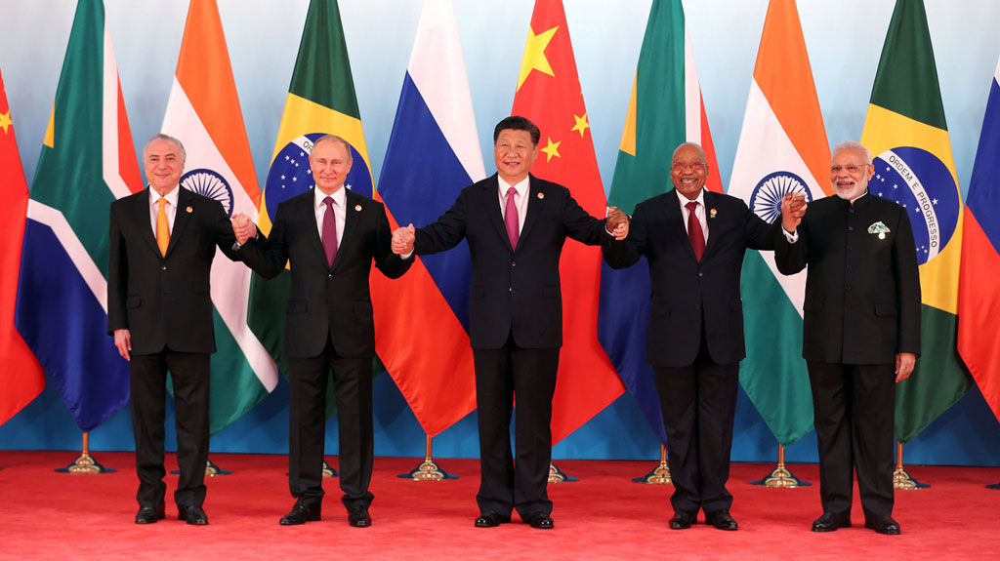
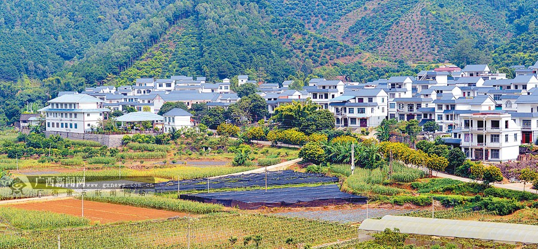

习近平主席在博鳌亚洲论坛2018年年会开幕式主旨演讲中说，1978年，在邓小平先生倡导下，以中共十一届三中全会为标志，中国开启了改革开放历史征程。从农村到城市，从试点到推广，从经济体制改革到全面深化改革，40年众志成城，40年砥砺奋进，40年春风化雨，中国人民用双手书写了国家和民族发展的壮丽史诗。

以下数据可以说明改革开放40年来中国在经济领域所取得的优异成绩：
GDP从1978年的0.3645万亿元增长到2017年的82.7万亿元；
人均国内生产总值从1978年的385元增长到2017年的59660元，年均增长约9.5%，已经达到中等偏上收入国家水平；
城镇居民人均可支配收入和农村居民人均可支配收入分别从1978年的343.4 元、133.6元提高到2017年的36396元、13432元；
农村贫困发生率从1978年的97.5%大幅下降到2017年的3.1%，远低于世界平均水平；
居民受教育程度不断提高，九年义务教育全面普及，高等教育毛入学率2017年达到 45.7%，高出世界平均水平近10个百分点；

城乡居民健康状况显著改善，居民平均预期寿命2017年达到76.7岁，高于世界平均水平；
建成了世界上最大的高速公路网、高铁运营网和移动宽带网，形成世界上人口最多的中等收入群体，织就了世界上最大的社会保障网，占世界经济比重15%左右，对世界经济增长贡献率超过30%，成为世界经济稳定复苏的重要引擎。